Steam-clean sofas, chairs and cushions — fresh, dry in hours, no harsh chemicals.
A professionally steam-cleaned sofa looks, smells and feels like new. Hot-water extraction pulls out years of body oils, food and drink spills, dust mites and pet dander that embed themselves in cushions and fabric weave — the stuff that vacuuming alone can’t shift.
Our Airflex Storm system uses strong vacuum lift so your upholstery is typically touch-dry in 2–4 hours — no soaked cushions, no watermarks, no sticky residue. We pre-test fabrics first and use eco-friendly, non-toxic detergents that are safe for children, pets and allergy sufferers. Ask about Scotchgard protection to keep it looking good for longer.
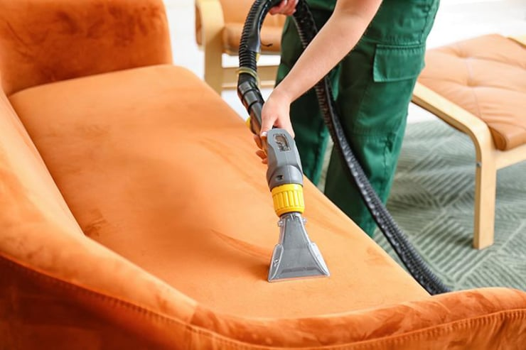
Real results from our upholstery cleaning service
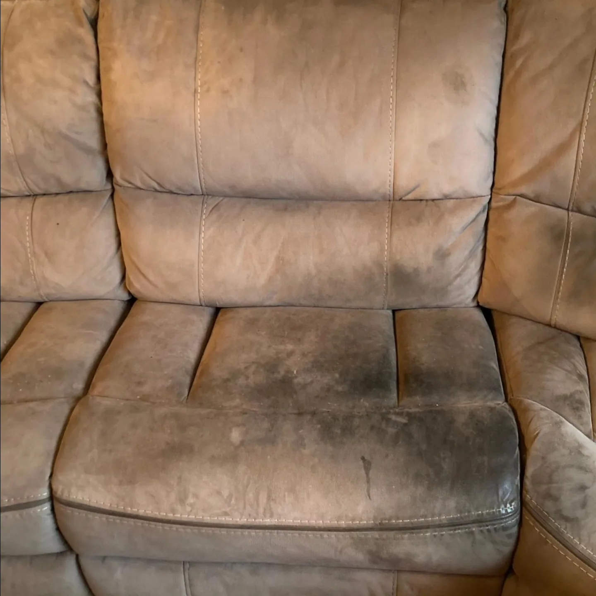
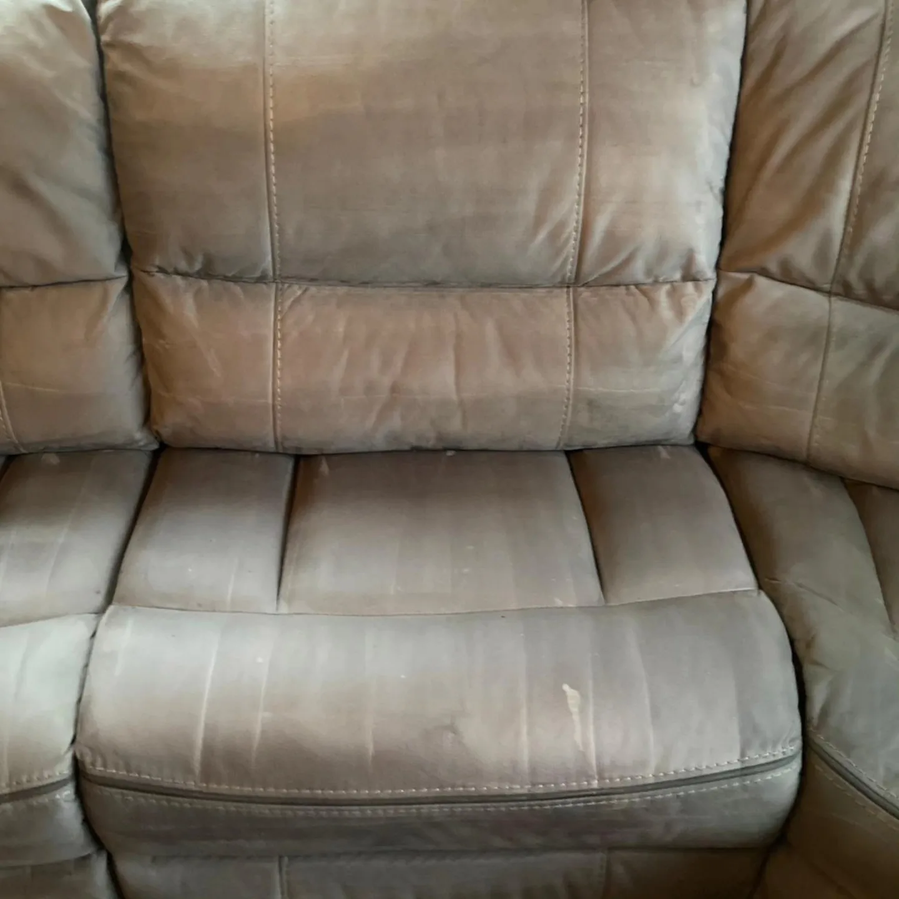
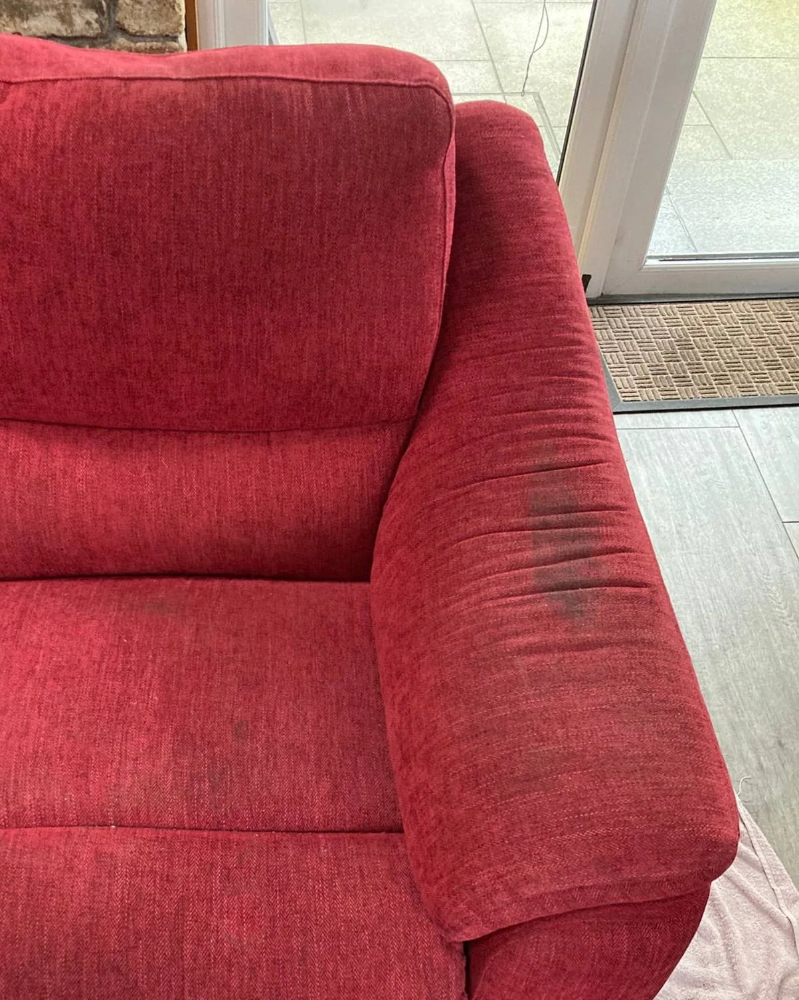
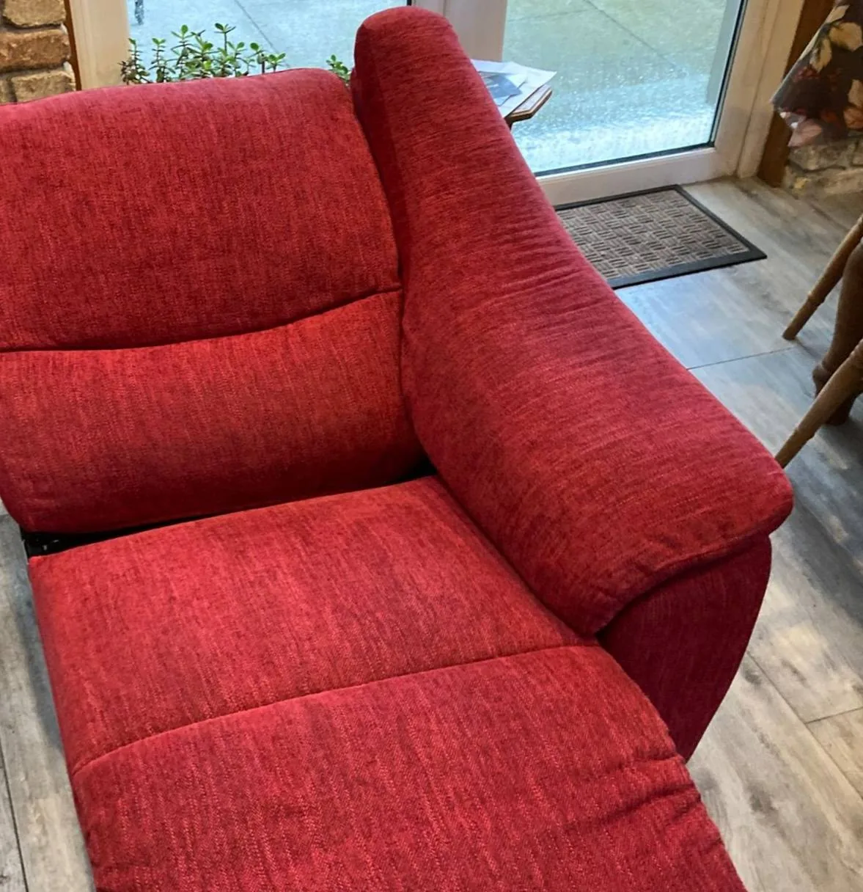
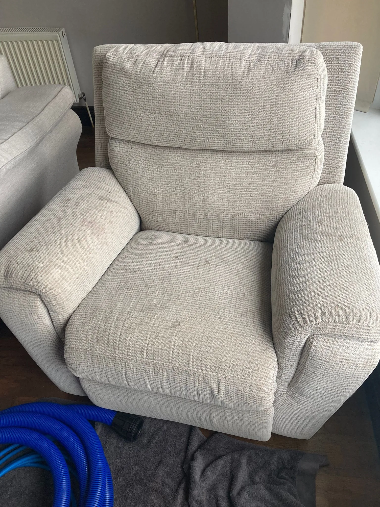
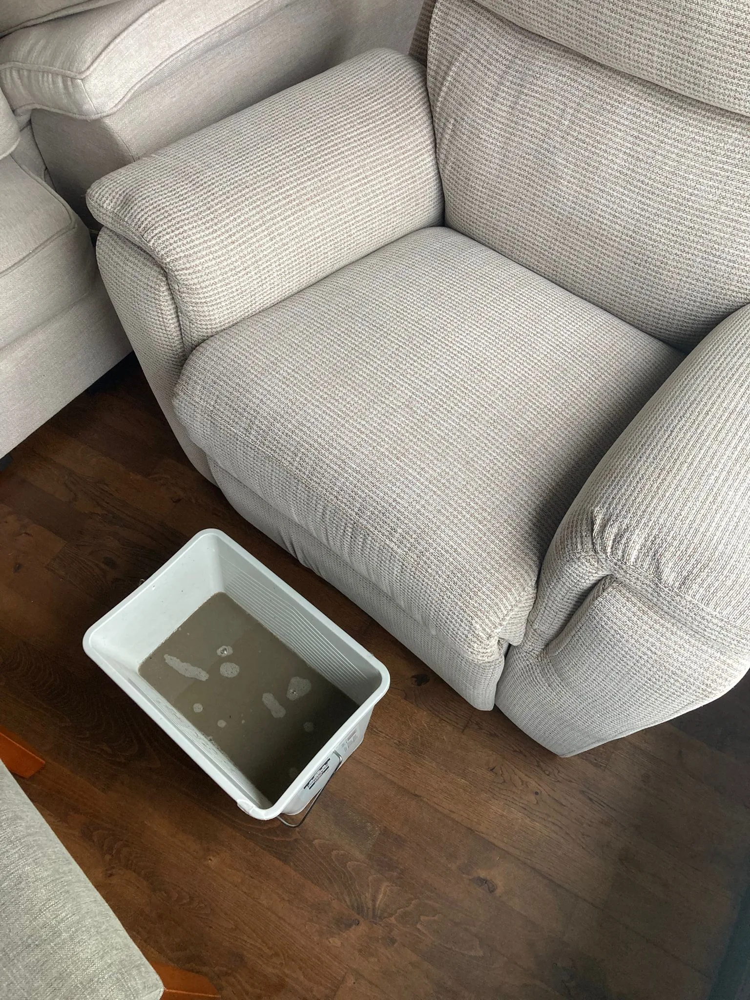
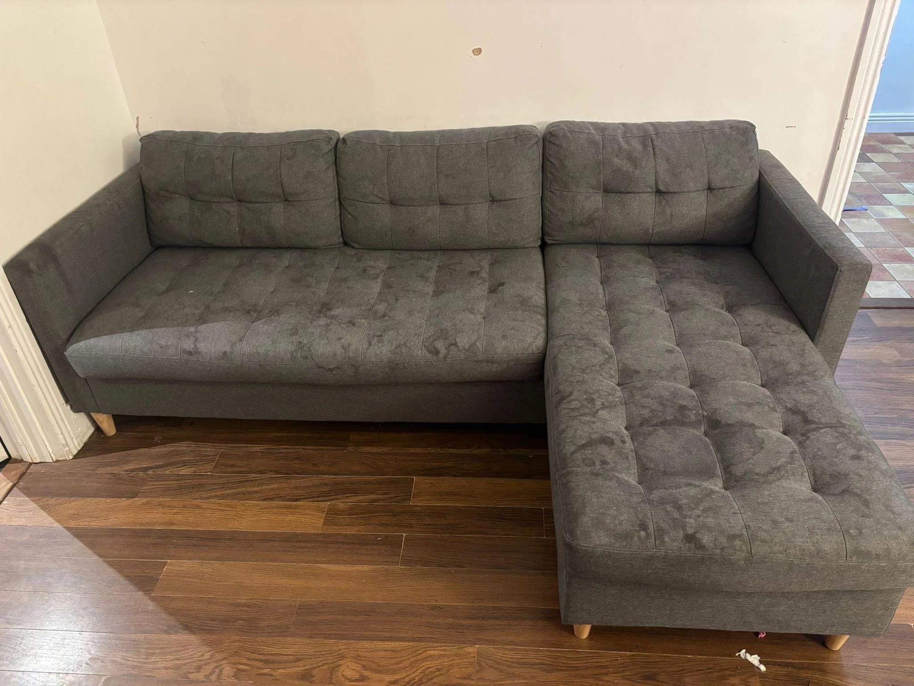
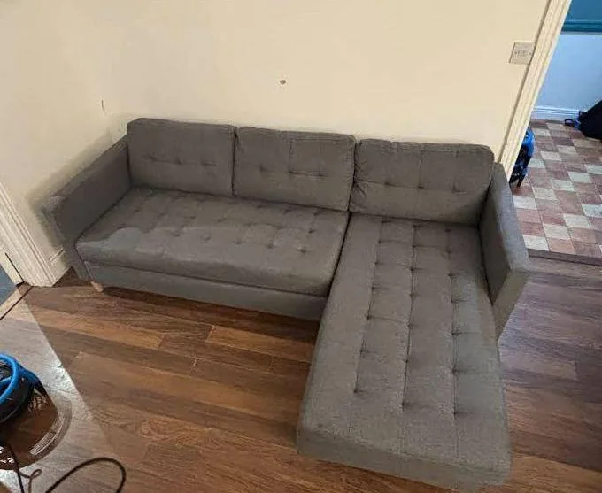
Before & After
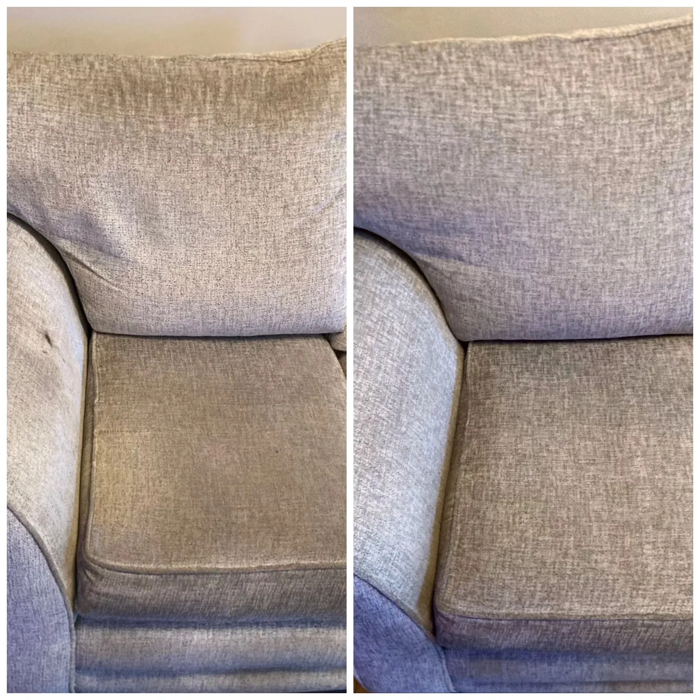
Before & After
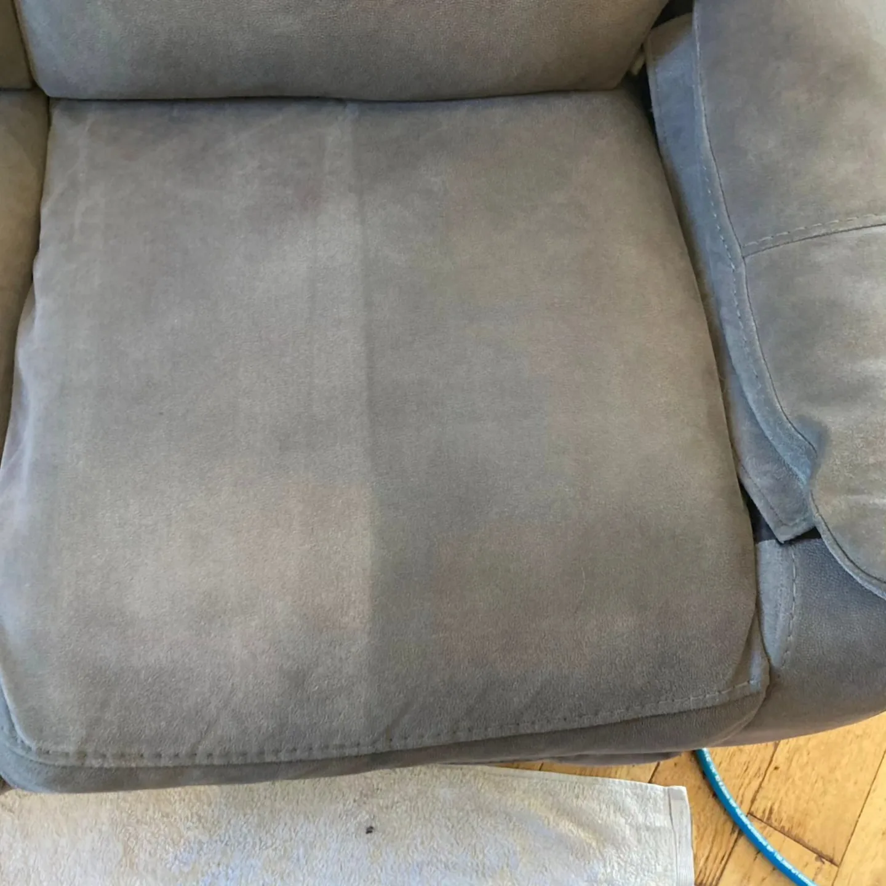
Professional cleaning for all types of upholstered furniture
Fabric Protection: Ask about our Scotchgard treatment to protect your upholstery from future spills and stains.
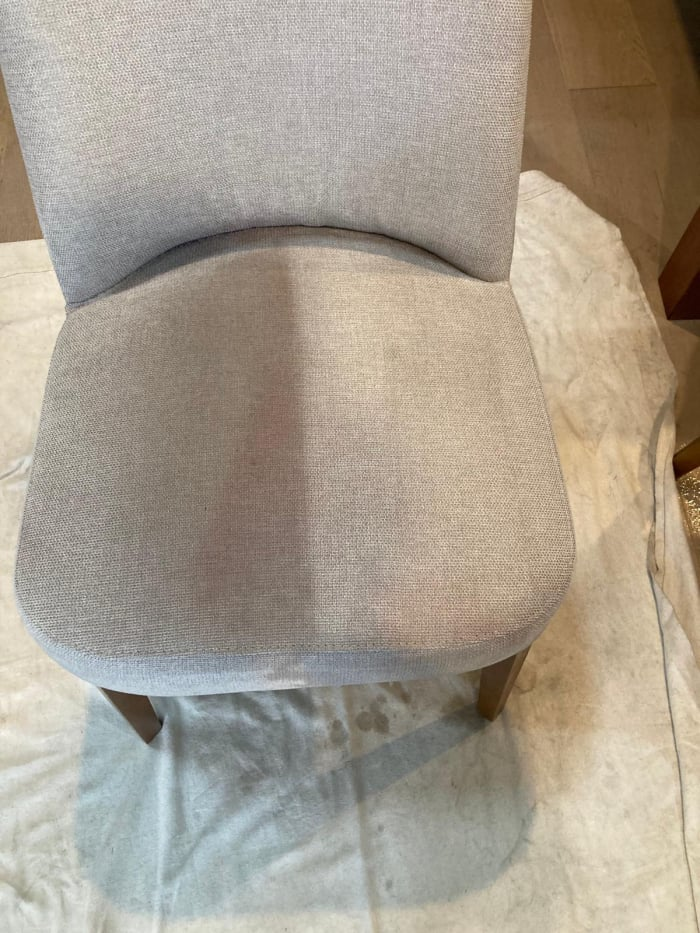
The questions our customers ask most often
Free, no-obligation quote — we reply same day. Serving Laois, Kildare, Carlow, Kilkenny, Tipperary, Offaly & Westmeath.